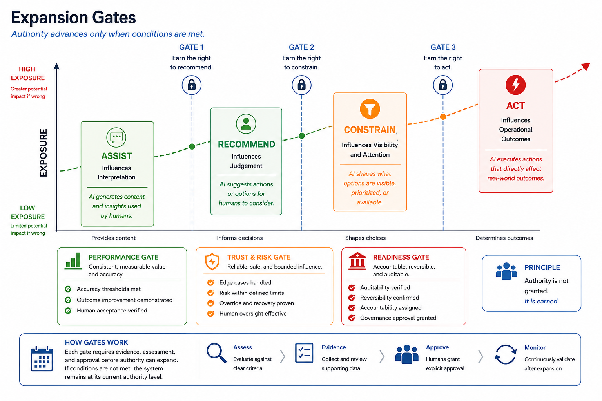
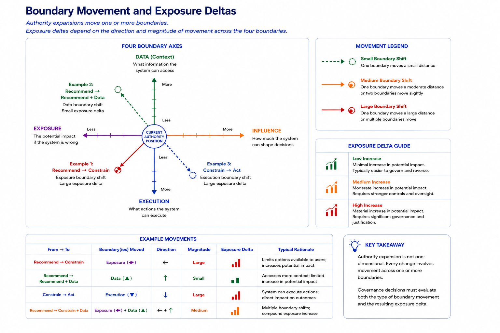

5. GATING EXPANSION: HOW SYSTEMS GAIN AUTHORITY
Authority topologies are not fixed. As systems show reliable performance, organisations often want to increase their authority. Each expansion changes the exposure profile. The key question is how to manage that expansion.
SCOPE views authority expansion as a conscious governance choice. It needs justification, review, and approval rather than happening automatically from proven capability.
Expansion gates are the method used to implement authority lag, as shown in Figure 4.

Figure 4: Expansion GatesAn expansion gate is a formal governance checkpoint that must be passed before authority can be expanded. Its purpose is to interrupt the natural tendency for authority to build up due to operational success and increasing organisational trust.
When an organisation suggests a change in authority, such as granting access to more data, letting a system influence more of a workflow, or allowing autonomous action, that change does not happen automatically. Instead, it goes through a formal review process. The expansion gate checks whether the proposed authority has been earned.
The expansion gate checks whether the proposed authority has been earned. Evidence is evaluated based on four criteria:
- Performance: Does the system reliably achieve the intended outcome?
- Reliability: Does performance remain stable under changing conditions?
- Trust Signals: Do operational users show sustained confidence in system behavior?
- Compliance: Does the proposed expansion align with legal, regulatory, and organisational requirements?
Only when sufficient evidence exists across these areas should authority be expanded. This approach makes authority dependent on proven evidence rather than technical ability alone.
Authority Should Lag Capability
Capability describes what a system can do. Authority describes what a system is allowed to do in a specific operational setting.
A system may show the technical ability to perform a task well before it is appropriate to grant the related authority. Technical performance is necessary for expansion, but it is not enough on its own. Decisions about expansion must also look at the resulting risk profile and the organisation's willingness to accept it.
SCOPE therefore sees demonstrated capability as necessary but not enough for authority expansion.
Boundary Movement and Exposure Deltas
As mentioned in Part 4, topology changes happen through boundary movement. An expansion might involve moving a data boundary, an influence boundary, an exposure boundary, an execution boundary, or a combination of these four.
Not all boundary movements have the same impact. Some movements lead to only slight additional exposure, while others change the system's role within an organisation.
For example, expanding a recommendation system to include confidence scoring may involve a modest shift of the influence boundary. On the other hand, expanding that same system to automatically filter incoming cases means moving the exposure boundary and creates a fundamentally different exposure profile.
Boundary movement has three important characteristics:
- Direction: What authority is being added, removed, or modified?
- Magnitude: How significant is the proposed movement?
- Exposure Delta: How does the movement change the resulting exposure profile?
An exposure delta shows the difference between the current exposure profile and the proposed exposure profile.

Figure 5: Boundary Movements and Exposure DeltaFigure 5 shows that expanding authority is not a one-time event; it's a process that crosses one or more governance boundaries. The central axis displays four dimensions that can change as a system's role grows:
- Data (what it can access),
- Influence (how much it shapes decisions),
- Exposure (the potential impact if it is wrong), and,
- Execution (what actions it can perform).
The example vectors indicate that different paths of expansion lead to different exposure changes.
For instance, expanding a system from Recommend to Recommend + Data mainly increases access to context and usually causes a relatively small increase in exposure. In contrast, shifting from Recommend to Constrain alters the system's influence on decision-making and can result in a much larger change in exposure.
The figure's key takeaway is that governance reviews should not only consider if authority is growing, but also look at which boundaries are shifting and by how much. Different paths can create significantly different exposure profiles.
Exposure deltas are the focus for reviewing authority expansion decisions.
Expansion Reviews
Every request for authority expansion should include four categories of information. These address four specific governance questions:
| Question | Information Required |
|---|---|
| Can the system perform the task? | Capability Indicators |
| Can the system perform the task consistently? | Reliability Indicators |
| What changes if authority is expanded? | Exposure Assessment |
| Why is the change worth accepting? | Business Justification |
An expansion review should evaluate all four.
Capability Indicators
Capability indicators evaluate if a system can perform the proposed task. Relevant measures may include accuracy, precision, recall, task completion rates, quality of outcomes, or other relevant indicators suitable for the operational context.
Capability indicators answer a simple question: "Can the system perform the proposed function?"
Reliability Indicators
Reliability indicators assess whether the system's performance stays stable over time, conditions, and operational environments.
A system that works well under ideal conditions may still be inappropriate for authority expansion if its behavior is inconsistent, unpredictable, or hard to reproduce.
Trust signals may also be relevant at this stage. Examples include user override rates, operator adoption patterns, escalation frequencies, or other indicators that show how the system performs in real operational workflows.
Reliability indicators answer another question: "Can the system perform the proposed function consistently?"
Exposure Assessment
While capability and reliability establish the technical limits of the system, exposure assessment evaluates what changes if more authority is granted.
The goal of exposure assessment is not to find out if exposure increases. Exposure nearly always goes up when authority expands. The aim is to clarify the nature and significance of that increase.
SCOPE evaluates exposure across three dimensions:
- Visibility: What information, cases, or decisions become hidden, filtered, or mediated?
- Dependency: How much do organisational outcomes depend on system behavior?
- Autonomy: What extra operational authority is granted, and how reversible are its consequences?
These dimensions create a repeatable assessment framework. Each dimension can be evaluated using defined criteria and given a qualitative rating. This allows organisations to compare exposure profiles and assess proposed authority changes without needing a universal numerical exposure score.
Examples of such criteria and suitable ratings are in the table below:
| Dimension | Criteria | Possible Ratings |
|---|---|---|
| Visibility | - What percentage of cases remain visible to humans? - Can hidden cases be audited? - Can suppressed items be recovered? |
- Low: full visibility retained - Medium: Partial filtering - High: Significant suppression - Critical: Visibility largely removed |
| Dependency | - What proportion of outcomes depend on the system? - Can operations continue if the system fails? - Is there an independent decision path? |
- Low: Advisory only - Medium: Influential - High: Operationally significant Critical: Mission-dependent |
| Autonomy | - Can the system execute actions? - Can actions be reversed? - How quickly do consequences propagate? |
- Low: no execution - Medium: Limited execution - High: Autonomous execution - Critical: high-scale irreversible execution |
| Exposure assessment answers the question: "What additional exposure are we accepting?" |
Consider a support-ticket system shifting from Recommend to Constrain. Exposure assessment may show that the proposed setup would lower human review coverage from 100% of tickets to 30%. This change creates a hidden group whose outcomes rely on system filtering choices. Governance reviewers must then decide if the existing reliability indicators and business reasons are enough to justify that change.
Business Justification
Capability indicators show if expansion is possible. Exposure assessment identifies what changes will occur.
Business justification explains why the increase in exposure is acceptable.
Relevant factors may include operational efficiency, reduced workload, faster response times, cost savings, better service quality, regulatory requirements, or other organisational goals.
Business justification answers the question: "Why is the increase in exposure justified?"
Governance Review and Approval
The expansion gate serves as the governance checkpoint. The expansion review is the process for gathering and evaluating evidence. The outcome of this review is either approval or rejection.
Here’s an example of the outcome from an expansion review based on the ideas discussed earlier:
Current Authority: Recommend
Proposed Authority: Constrain
Boundary Movement: Exposure Boundary
Exposure Delta: Human review coverage reduced from 100% to 30%
Expansion Review Outcome: Approved subject to quarterly review.
Expansion reviews should include both technical and governance stakeholders.
Technical reviewers look at capability and reliability indicators. Governance reviewers assess exposure evaluations and business justification.
The goal is not to remove judgment from expansion decisions. Instead, it is to ensure that capability, exposure, and organisational goals are assessed clearly rather than implicitly.
Expansion reviews are not simple pass-fail processes. Capability indicators determine if expansion is technically possible. Exposure assessments clarify what changes occur if authority is expanded. Business justification explains why those changes are worth accepting. Governance reviewers must consider these aspects together. Larger exposure changes typically need stronger business justification and more supporting evidence than smaller ones.
Therefore, all expansion requests must be reviewed, documented, and approved before altering authority boundaries.
The specific roles, responsibilities, and approval authorities should be defined within the organisation’s governance structure and recorded in the Scope Ledger.
Authority Staging
Authority should grow gradually.
The point of staging is not to delay deployment unnecessarily. It is to make sure that authority increases only after gathering supporting evidence and carefully assessing exposure.
Generally, systems should move through authority stages one at a time. Jumping between non-adjacent stages should need extra justification because bigger boundary shifts usually lead to larger changes in exposure.
Thus, authority staging turns expansion from an assumption into a governance process.
Expansion as Exposure Management
Every authority expansion suggests a change in organisational exposure. Systems gain more authority not just because they can use it, but because an evaluation of a proposed topology change has taken place, the resulting exposure change has been assessed, and the increase in exposure has been deemed acceptable.
SCOPE does not set universal exposure limits. Acceptable exposure varies based on the organisation’s context, operational effects, regulatory requirements, and risk tolerance. The goal of exposure assessment is to make the changes clear so that organisations can make informed governance choices.
Making a single expansion decision well is crucial but not enough. Organisations that make good decisions can still lose focus: personnel change, systems develop, and the reasons for past decisions become hard to trace. The next question is how to keep governance memory intact throughout the system's lifecycle.